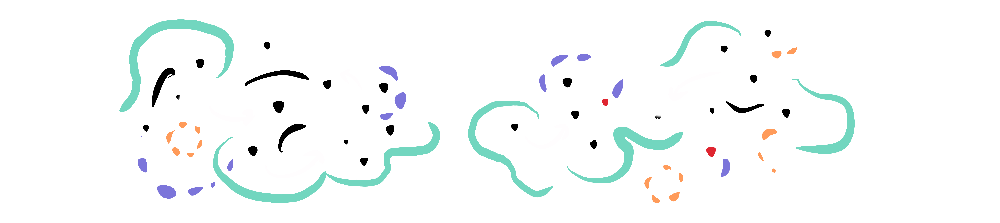
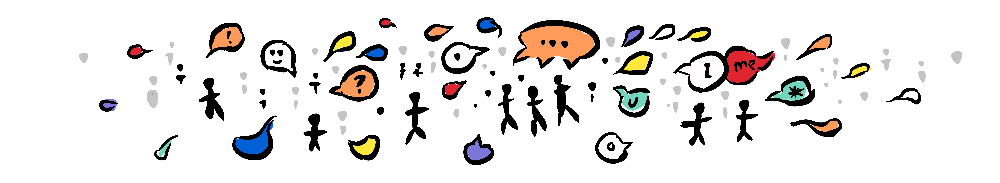

~ how one phenomenon lays the foundation for the next ~
If you'll cast your mind back to Emergence Vs Entropy, we found, in order to overcome entropy, an emergent system, like our planet, benefits from a consistent stream of energy from the sun––creating a substrate for life on earth. Yet the sun is still increasing the entropy of the system as a whole through its role as a dissipative structure.
The term "substrate" is used across many disciplines—denoting a base that supports dependent phenomena.

One of the most memorable stories of substrate emergence is that of cyanobacteria—you’ll remember it, of course, it’s very memorable.
No?
Well, what happened was, for two billion years, bacteria were the only form of life, and they were getting by with an atmosphere Bill Bryson describes where...
"there was no more oxygen to breathe on Earth [...] than there is on Mars today. It was also full of noxious vapours from hydrochloric and sulphuric acids powerful enough to eat through clothing and blister skin..."
... he goes on to explain that...
"At some point in the first billion years of life, cyanobacteria, or blue-green algae, learned to tap into a freely available resource—the hydrogen that exists in spectacular abundance in water. They absorbed water molecules, supped on the hydrogen, and released the oxygen as waste, and in so doing invented photosynthesis." - Bill Bryson
Cyanobacteria were able to thrive by exploiting a substrate of water and in turn, over the succeeding billions of years, raised the level of oxygen in Earth’s atmosphere to 20% creating the substrate that would be necessary for mitochondria which would thrive and become the substrate for... us.
In the following simulation, we see an abstracted form of this process, where as each color capitalizes on a substrate (in this case food) and deposits a different sort of food that is suited to another color. You can see that while the random colors perish at the beginning, inevitably the chain of dependency builds to accommodate even the pickiest eaters.
But this principle of substrate emergence is not only confined to life on earth. In Emergent Gravity we used the Graviton simulation to explore how gravity itself can emerge along with complexity from random forces. Gravity is important because it is the foundation that allows accumulation––which makes "something" detectable and measurable. It is a first step on a stairway of emergence, where each stair supports the next. In a very simplified form...

Quantum fluctuations: Random attraction and repulsion, zero dimensional massless particles provide a substrate for the emergence of...

Complexity: Some fluctuations collect together while others push apart, while others have more complex, dynamic patterns, respectively; gravitation, dark energy, and electric fields. These provide the substrate for the emergence of...

Gravitational bodies and systems: These become massive, and eventually collapse into supernovae which create new and varied, yet consistent, atoms which are necessary for the creation of...
Complex atomic and molecular structures: These are the basis of ordered forms; planets, environments, fuels, crystals, and eventually...

RNA: Because there are consistent resources and consistent environments, RNA is able to exploit these materials, and develop DNA which is the substrate for...

Cellular life: In a world full of cells, new relationships can arise creating complex relationships like endosymbiosis resulting in eucaryotic cells, and the rise of the aforementioned cyanobacteria which lead to the "Great Oxygenation Event", which provides the substrate for...

Mitochondrial life: Oxygen supports mitochondrial DNA giving rise to plants and animals, in which nervous systems become the substrate for...

Brains: The development of brains leads to greater brain complexity and areas like the prefrontal cortex and temporal lobes which becomes the substrate for...

Communication: Greater social interaction, language, and socially-transmitted ideas (memes) become the substrate for...

Technology and Civilization: Humanity lives in a feedback loop between culture and technology, which is the substrate for many new phenomena from the proliferation of agriculture, to cities, to the internet and to a potentially new paradigm shift with the emergence of...

Autonomous, self-replicating AI: Now we are on the verge of a new phenomena, Artificial Intelligence, the development of which shows no signs of slowing––a testament to the power of emergence.
We see a consistent pattern of emergence; a phenomena-substrate-phenomena cycle. An important factor in this cycle is replication. We will take a short detour into replication as a mechanism of emergence, focusing on genes, memes and Susan Blackmore's concept of temes and see what implications it has for our future. We will then complete this series with some fascinating artists and creators pushing emergence further with ever more impressive games of life.